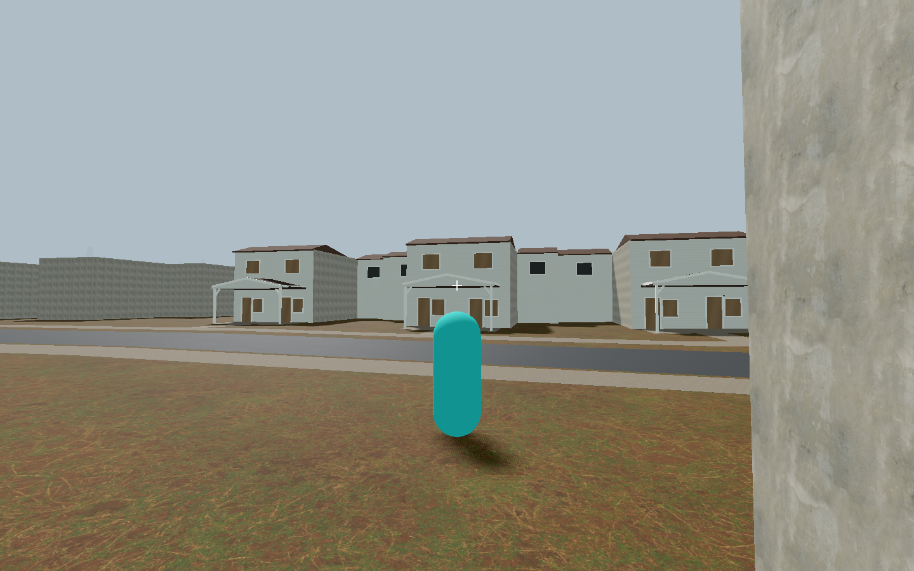
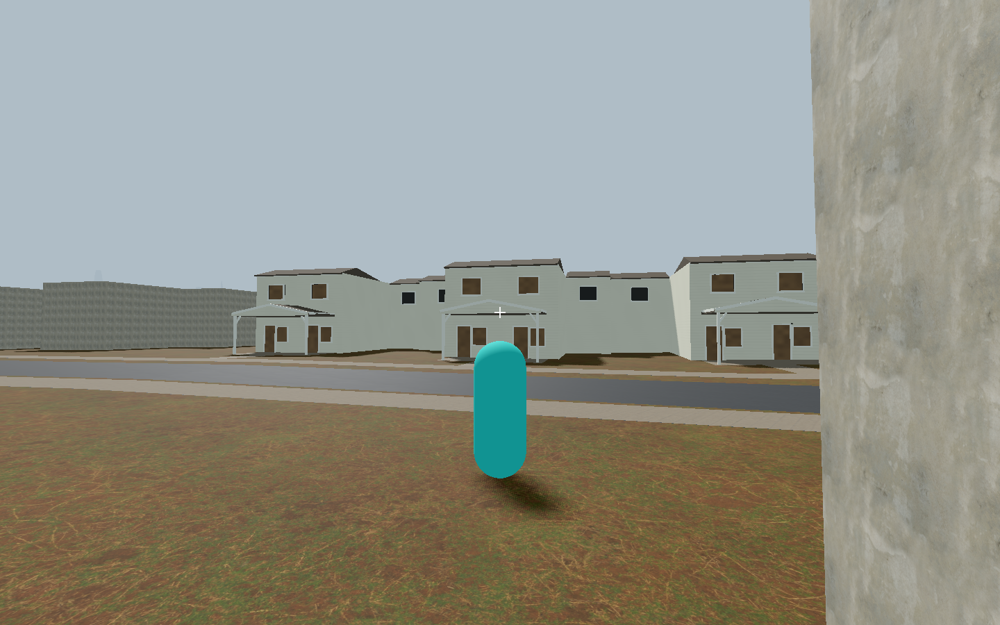
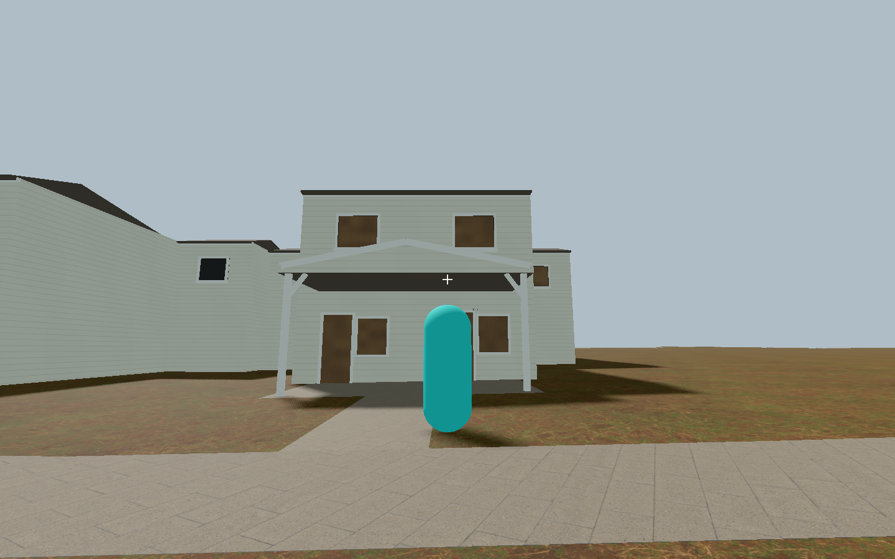
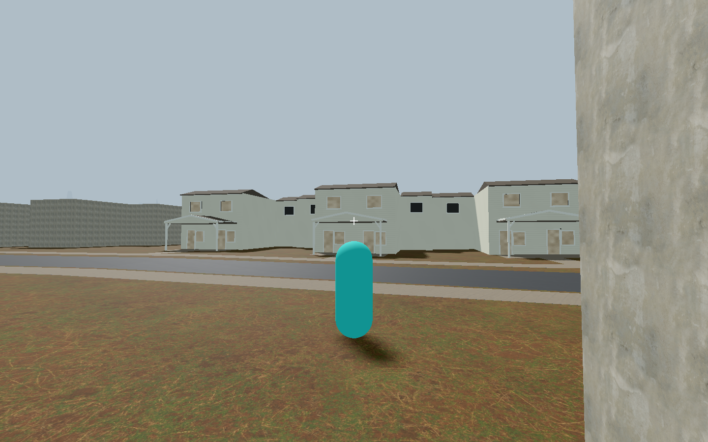

1317 Gateview / w95934125 — unattached draft
Scoped art/source/mechanics PASS. Existing recognition only; no promotion. Scope/history · Draft index
Final material002 gameplay comparison

Baseline
Final candidate
Final near viewHistorical finish HOLDs
Initial002 shading
Material001 pale boarding